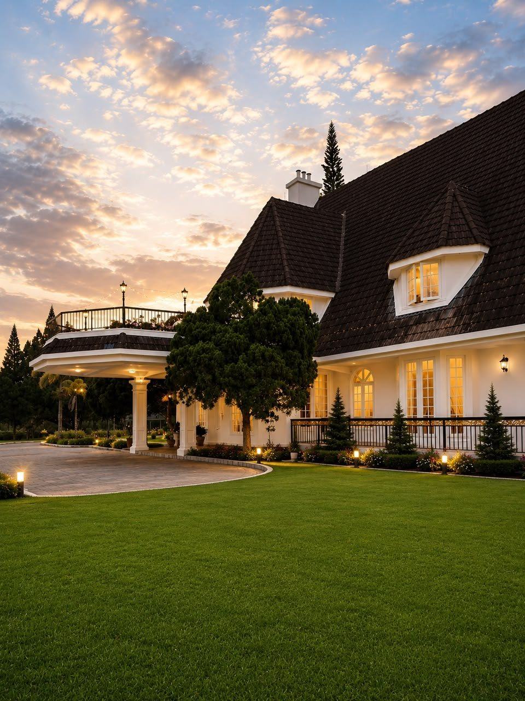
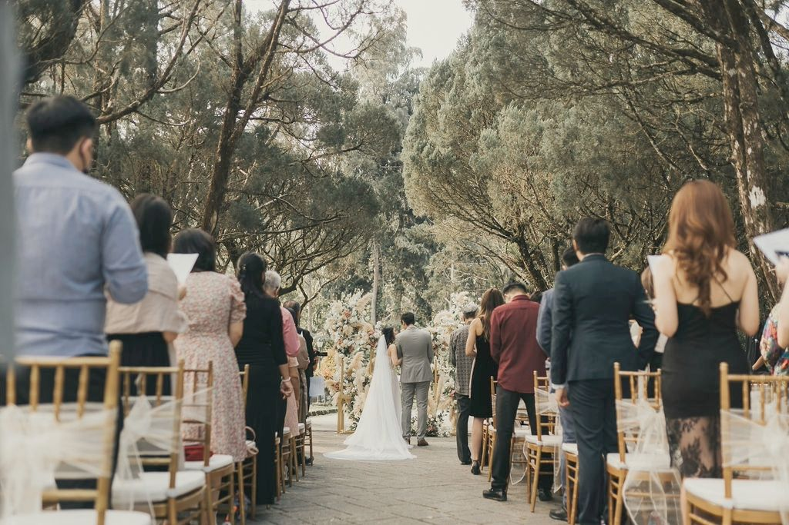
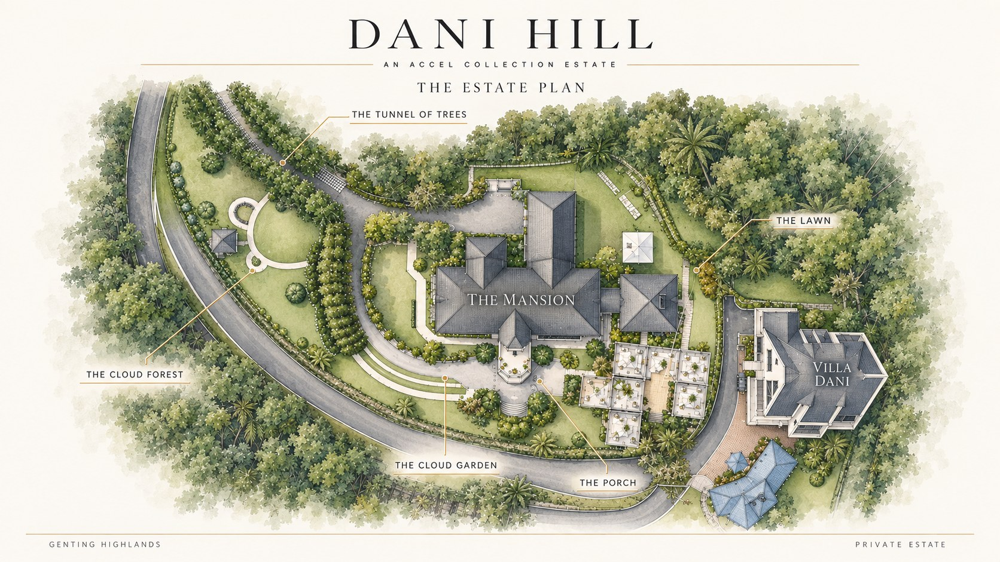
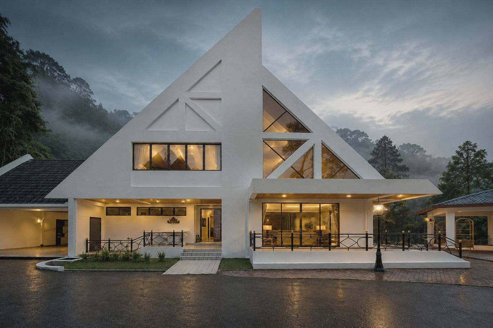

Where Love Meets The Highlands
Luxury Weddings | Private Retreats | Exclusive Events
Dani Hill, formerly Puncak Dani, is a private estate in Gohtong Jaya, 45 minutes from Kuala Lumpur. One wedding a day, in the cool air of the hills.
Your wedding, on a private estate.
Dani Hill is a private estate overlooking the Awana Golf & Country Club and the rainforest beyond. A double-storey heritage Mansion, with its grand staircase and chandeliers, stands beside open lawns made for a garden ceremony.
We host one wedding per day. On your date the house, the gardens and the views belong to you and your guests.
- Guests
- Up to 300
- Larger celebrations
- Up to 500
- From Kuala Lumpur
- 45 minutes
- Overnight on site
- 30 guests

A ceremony under open sky and pines
The lawn sits in front of the Mansion, framed by pine trees and the hills. The highland air keeps an afternoon ceremony comfortable, and the house is a few steps away if the mist rolls in.

Seven settings on one private estate
Guests arrive through the Tunnel of Trees, past the Cloud Forest, to the Mansion and its Porch. The Cloud Garden terraces and the Lawn give you room for the ceremony, cocktails and dinner, each in its own setting.
Villa Dani, next door, is where the bridal party gets ready and family can rest. Both houses sleep 15, so the people closest to you can stay the night.
About the houses →From the first look to the last dance
How most couples use the estate, start to finish. Every timeline is yours to change.
- 01
Preparation
The bridal party settles into Villa Dani in the morning, with space for hair, make-up and photos.
- 02
Ceremony
Vows on the garden lawn, with the Mansion behind you and the hills all around.
- 03
Reception
Dinner indoors in the Mansion or alfresco on the lawn, arranged by your own caterer.
- 04
Stay the night
Up to 30 family and friends sleep on site, then wake to breakfast in the mist.
A venue that works with your team
Dani Hill is a venue-only estate. Bring the planner, caterer and decorator you trust, or ask us who we recommend.
- Exclusivity
One wedding per day. The estate is reserved for you.
- Capacity
Up to 300 guests as standard. Up to 500 with a surcharge.
- Vendors
Your own planner, caterer and decorator, with recommendations if you need them.
- Weather
Indoor and outdoor spaces, so every garden plan has a covered alternative.
- Access
About 45 minutes from KL. 40-seater coaches reach the estate.
Why Couples Choose Dani Hill
Couples choose Dani Hill for its unmatched combination of heritage charm, natural scenery, and proximity to Kuala Lumpur. The venue is fully customisable — bring your own wedding planner, decorator, and caterer to transform the mansion and gardens into your dream setting. From intimate gatherings to grand receptions of up to 300 guests (500 with a surcharge), every wedding at Dani Hill feels exclusive, private, and unforgettable.
- 01
Exquisite European Architecture
Step into a world of timeless elegance with our meticulously restored European-style mansion, offering a grand and romantic backdrop for any occasion. Every detail, from the intricate facades to the opulent interiors, speaks of heritage and luxury.
- 02
Breathtaking Highland Scenery
Nestled amidst the lush, cool hills of Awana, Genting Highlands, Dani Hill boasts panoramic views and serene garden landscapes. Our natural surroundings provide a stunning, picturesque setting for unforgettable memories and photographs.
- 03
Bespoke Event Planning & Service
From intimate gatherings to grand celebrations, our dedicated team offers personalized event planning services to bring your vision to life. We ensure every detail is flawlessly executed, providing a seamless and stress-free experience for you and your guests.
- 04
Luxurious Modern Comforts
Experience the perfect blend of classic charm and contemporary convenience. Our estate is equipped with state-of-the-art amenities and luxurious accommodations, ensuring a comfortable and indulgent stay for all, while preserving its historic allure.
- 05
Secluded Yet Accessible Location
Enjoy the tranquility and privacy of a secluded highland retreat, just a short, convenient drive from Kuala Lumpur. Dani Hill offers an exclusive escape that feels a world away, yet remains easily accessible for all your guests.
- 06
Cool Mountain Climate Retreat
Escape the city heat and unwind in the refreshing cool climate of Genting Highlands. Surrounded by misty mountain air, pine trees, and peaceful natural landscapes, Dani Hill offers a serene retreat perfect for relaxing getaways, intimate celebrations, and meaningful gatherings.

Two hosted residences, beyond the wedding day
Outside of weddings, the Mansion and Villa Dani are hosted private residences from the Accel Collection, with a personal host, housekeeping and a chauffeur.
Explore the residences →Wedding questions
How many guests can Dani Hill host?
Up to 300 guests as standard, and up to 500 with a surcharge. We host one wedding per day, so the estate is reserved for you.
Can we bring our own caterer, decorator and planner?
Yes. Dani Hill is venue-only, so you can work with your own team. We are happy to recommend caterers and event organisers we have worked with.
Can family stay overnight?
Yes. The Mansion and Villa Dani each sleep up to 15, so up to 30 guests can stay on site.
How far is Dani Hill from Kuala Lumpur?
About 45 minutes by car. The estate is in Gohtong Jaya, Genting Highlands, and 40-seater coaches can drive up to it.
What if it rains or the mist rolls in?
The highlands are typically 18 to 22°C, with mist common in the mornings and evenings. Every outdoor plan has an indoor alternative in the Mansion.
See the estate in person
Site visits are by appointment. Walk the lawn, see both houses and talk through your date with our team.
Lot 12 & 13, Puncak Dani & Villa DaniGohtong Jaya, Jalan Institut Aminuddin Baki
69000 Genting Highlands, Pahang
Check your date
Tell us a little about your wedding and we'll reply with availability, usually within one working day.